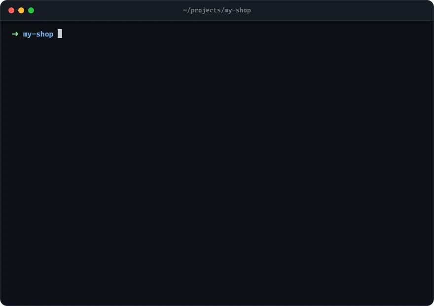

One command gives any project the same rules, docs and proven prompts, so Claude Code, Gemini, Codex and Cursor all work the same careful way, from the first session.
Run it inside your project folder. Needs Node.js 18+. Nothing is installed globally and existing files are never overwritten.

They guess APIs, claim "done" without testing, touch unrelated code, and read docs that no longer match. ai-kit gives each project a short, shared rulebook and the docs to back it up.
AGENTS.md holds 26 rules. CLAUDE.md and GEMINI.md only import it, so switching agents never means a different set of rules.
One base doc, docs/PROJECT.md. Others are added only when needed, and the Docs Index lists only files that exist, so no agent chases a missing doc.
Five prompts for the big jobs: project setup, docs sync, frontend rules, UI tasks for a second agent, and a production-safe audit.
Example: a new project called test. The same steps work for any existing project.
ai-kit reads package.json and the lockfile in the root and in every sub-folder with its own manifest (frontend/ + backend/, apps/* workspaces, Python, Go, Rust or PHP services): which part is the frontend and which the backend, the framework, Tailwind version, package manager and your real scripts. It then writes the files, filled in for this project.
cd test
npx github:Hazman97/ai-kit initWant a preview first? Add --dry-run. It prints what would change and writes nothing.
Open the project in Claude Code, Gemini or Codex and send this one line. The agent reads your code and writes docs/PROJECT.md: what it is, the stack, commands, structure and key decisions.
follow .ai/prompts/project-setup.md
Has a UI? Also send follow .ai/prompts/frontend-setup.md for design tokens, styling and phone rules.
From now on every agent reads the same rules each session. Run doctor any time to catch drift: missing docs, a stale index, or a .env committed by mistake.
git add AGENTS.md CLAUDE.md GEMINI.md LEARNINGS.md docs .ai git commit -m "Add ai-kit setup"
Purple files are refreshed by update. Green files belong to you and are never overwritten.
Each one is there because an agent once got it wrong. They live in a managed block in AGENTS.md. Your own notes go below it and are never touched.
.env, never print a secret value.docs/FRONTEND.md; every screen works at 390 px and in light and dark mode.LEARNINGS.md at the start of each session.They live in .ai/prompts/. The agent only opens one when you ask, so they cost nothing the rest of the time.
Reads the code and config, then writes docs/PROJECT.md: what the app is, stack, commands, structure and key decisions. Changes no code.
follow .ai/prompts/project-setup.md
Writes docs/FRONTEND.md from your real UI: design tokens, components, Tailwind v3/v4 rules, phone-width and dark-mode checks.
follow .ai/prompts/frontend-setup.md
Updates only, keeps your structure, checks every number and name against the source, and marks anything uncertain. Never writes secret values.
update the docs
Splits the work: one agent builds and tests the logic, another does the look in a fixed list of files and proves it with screenshots at desktop and 390 px.
write a UI task for the settings page with .ai/prompts/ui-task.md
A read-only QA pass: type check, tests, API contract, then driving the app in a throwaway environment like a real user. Findings come with evidence and severity.
follow .ai/prompts/audit.md
Nothing to install. npx fetches the latest kit from GitHub each time.
npx github:Hazman97/ai-kit init
Set up a project. Detects the stack and adds the files. Files that already exist are kept.
npx github:Hazman97/ai-kit init
Convert an older setup. Adds the rules to an existing AGENTS.md, keeps your own sections, and saves backups in .ai/backup/.
npx github:Hazman97/ai-kit update
Get newer rules and prompts. Your project notes and any prompt you customised stay exactly as they are.
npx github:Hazman97/ai-kit doctor
Health check. Missing docs, unfilled placeholders, a stale Docs Index, agents not reading AGENTS.md, and secret files committed to git. Exits 1 on errors, so it works in CI.
npx github:Hazman97/ai-kit doctor --fix
Fix the Docs Index. Rebuilds the table from the docs that really exist.
--dry-run preview only
--dir <path> another folder
--help all options
Your own files are never overwritten: LEARNINGS.md, docs/ and prompts you edited are kept as they are. An existing AGENTS.md, CLAUDE.md or GEMINI.md gets the latest rules and the import line while keeping its own sections, and a copy of each is saved in .ai/backup/ first; --no-merge leaves them untouched. The one other change: an ai-kit block is appended to .gitignore so screenshots and browser profiles agents create are never committed. Add --dry-run to see the plan before anything is written.
update change?Only what ai-kit manages: the rules block between the <!-- ai-kit:rules --> markers in AGENTS.md, the Docs Index block, and prompt files whose first line is the ai-kit:managed marker. Your Project notes, LEARNINGS.md and docs/ are never touched.
Delete the first line of the prompt file (the <!-- ai-kit:managed … --> comment). From then on the file is yours and update leaves it alone.
Under ## Project notes at the bottom of AGENTS.md: decisions, commands, gotchas. Personal rules that apply to every project (your language, tone) belong in your agent's global file, e.g. ~/.claude/CLAUDE.md or ~/.gemini/GEMINI.md.
Yes. The rules and prompts are language-neutral. Without a package.json, ai-kit still detects Python, Go, Rust, PHP and others where it can, and leaves the commands table for your agent to fill in during project setup.
No. ai-kit is a few hundred lines of plain Node.js with zero dependencies. It reads your project files locally and writes Markdown. Read the source on GitHub before you run it.
Fork the repo, edit the files in templates/, and run npx github:<you>/ai-kit init. It's MIT licensed.
npx github:Hazman97/ai-kit init
docs/PROJECT.md dari kod:
follow .ai/prompts/project-setup.md
doctor: dia cari docs yang hilang, placeholder yang belum diisi, dan fail .env yang ter-commit.
npx github:Hazman97/ai-kit doctor
Projek yang dah ada AGENTS.md? Jalankan init macam biasa. Peraturan terbaru dimasukkan, bahagian anda dikekalkan, dan backup disimpan dalam .ai/backup/.